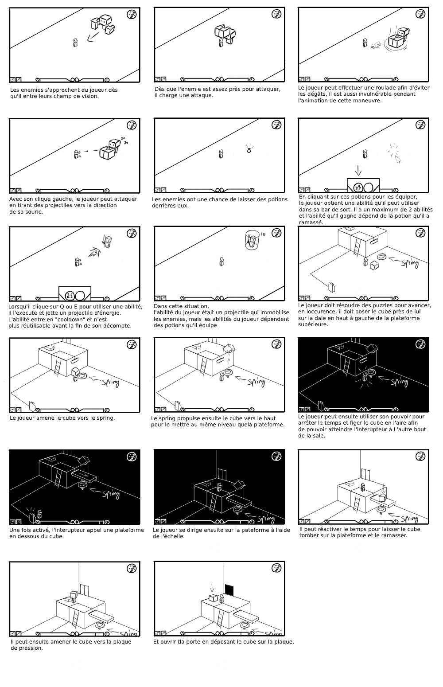
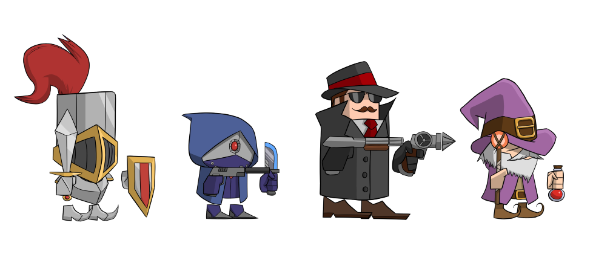
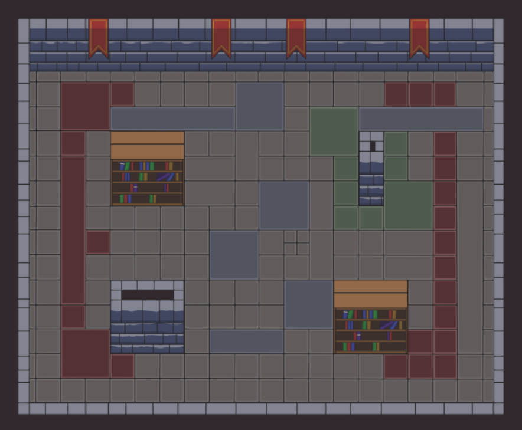
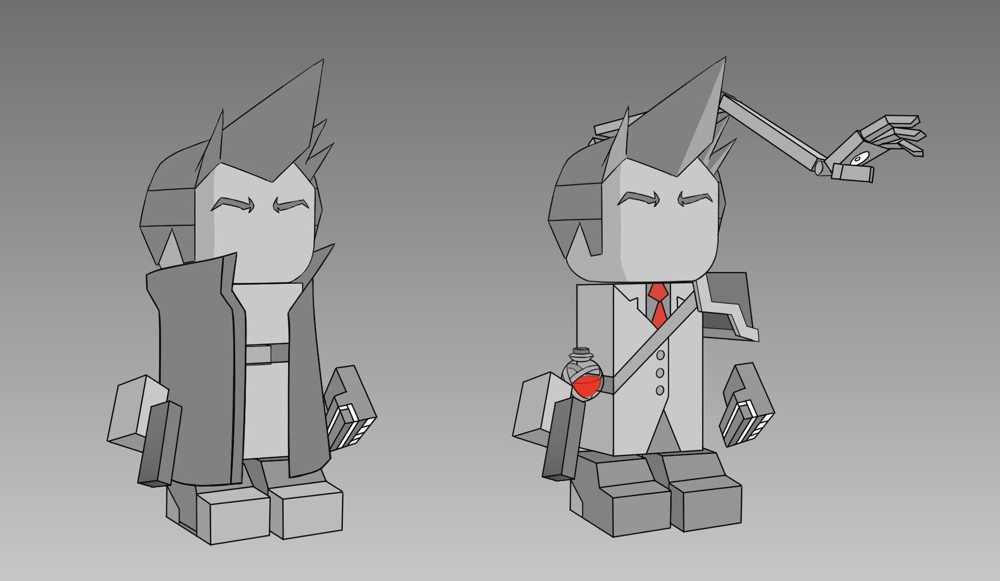

Intégrateur/Designer de jeu. J'ai gradué du TIM à Maisonneuve récemment et j'étudie en ce moment dans un programme à l'UQAT. J'ai des aptitudes
en programmation de jeu avec Unity\C# mais aussi
avec Maya et les
outils Adobe comme Photoshop, et Première
. J'aime tout le processus de création
jeu mais j'ai un penchant pour la conception graphique et idéation. J'ai aussi un grand intérêt pour tout ce qui est Art digital.
Chronoshift est un jeu de donjon hack'n slash où vous arrêtez le temps pour vaincre des ennemies et résoudre des puzzles.
Mes rôles étaient directeur artistique et chargé de projet.
J'ai programmé les mouvements et la mécanique de pick-up d'objets physiques et de lancer pour joueur.
J'ai conceptualisé et animé les personnages et assemblé le niveau 2.
On a fait les effets de particules mais on a aussi utlisé les assets 'Low Poly Dungeons' de 'JustCreate' et 'Free LowPoly SciFi' de 'Raaksa' sur le Asset Store pour l'environnement.
Voîlà le premier puzzle que j'ai designé et intégré pour le jeu. C'est une salle où le joueur doit se rendre à la porte mais pour l'ouvrir, il doit garder le bouton rouge au sol appuyé. Pour se faire il doit poser un bloc dessus mais lorsque le bouton est activé, la porte s'ouvre mais le chemin vers la porte est descendu. Le joueur doit donc amener la boîte au bouton mais arrêter le temps pendant que le cube est en train de tomber pour avoir le temps de passer le pond et ensuite laisser le cube tomber pour ouvrir la porte.
C'est un puzzle qui nécessite au joueur d'analyser l'environnement et de comprendre par ses actions, ce qui change lorsqu'il appuit sur le switch donc j'ai implémenté un repositionnement de la caméra pour cadrer toute la salle afin que le joueur puisse faire une corrélation instantannée avec les résultats de ses actions.
J'ai designé ce puzzle avec l'intention qu'il tourne autour de la mécanique principale de time stop, il fallait alors que le joueur soit obligé d'utiliser cette mécanique pour progresser, en somme, ce système à bien fonctionné mais maintenant que je révise ce projet, je pense qu'il aurait été plus mieux d'ajouter un des murs passables qui détruisent les objets (montré dans le prochain puzzle) sur le côté de l'étage supérieur pour empêcher les joueurs de jeter leur boîte au boutton depuis la porte après avoir passé le chemin.
Dans ce puzzle, le joueur doit encore poser une boîte sur le bouton afin de garder la porte de sortie ouverte, cependant, lorsque le joueur retourne au bout de salle pour collecter une boîte et l'emmenner à sa destination, sa boîte est détruite dès qu'il passe à travers le mur bleu qu'on a positionné entre les boîtes et le cube. Le seul moyen de désactiver ce mur est d'appuyer sur l'autel qui rayonne en rouge après le mur. Lorsque le joueur appuit dessus, le mur se baisse mais quand il quitte l'autel, le mur revient. La solution est donc de ramasser une boîte, la jeter au mur et arrêter le temps avant qu'elle touche ce dernier pour aller le désactiver en appuyant sur l'alter et activer le temps pour laisser la boîte reprendre son momentum pour se diriger vers l'autre côté.

Dans les premiers stages d'idéation du jeu, j'ai conceptualisé un scénarimage qui présente les mécaniques du jeu. On y voit le système de sort et de magie qu'on a dû abandonner pour le scope mais on y voit aussi la visualisation de la mécanique principale du jeu qui est d'arrêter le temps et de le faire continuer à volonté.
Rail-O-Vania est une application mobile que moi, David Dias, et Frédérick Ducher avont créée pour un GameJam de 48 heures.
Pour ce projet, J'ai designé et assemblé le niveau et chemin de course du wagon.
C'est un chemin relativement court donc je voulais que le joueur change d'environnement assez rapidement et qu'il ait de quoi à faire. Alors le chemin commence lentement dans une section étroite pour qu'il ait le temps de s'accommoder aux contrôles, ensuite le joueur passe à travers une section rapide sur un précipice au-dessus de la lave qui l'emmène vers une grotte où il doit tirer à distance sur un levier pour faire descendre le pond qui lui permet de progresser. Cette section était implémentée car on voulait enrichir l'expérience avec plus d'interaction avec l'environnement, cependant on a manqué de temps mais cette section reste engageante.
je me suis aussi occupé de la modelisation des assets comme les rails et vagons, les chauves sourris et les infrastructures à l'exception de la cabane du début.
Projet 3D que j'ai fait pour la technique en hiver 2019, c'est un véhicule aérien que j'ai modélisé sur Maya et qui tire son apparence des aspects physiques d'une baleine. Je l'ai conceptualisé et modelé pour qu'il fasse partie d'un plus grand narratif.
Projet 3D que j'ai fait pour la technique en hiver 2019 dans un projet d'équipe de 4 où on devait conceptualiser des personnages qui auraient un narratif ensemble, c'est un personnage que j'ai modélisé, riggé et animé sur Maya.
Projet 3D que j'ai fait pour la technique en hiver 2019, c'est un pistolet à portail que j'ai conceptualisé et modélisé sur Maya. J'ai conceptualisé et modeler cet objet pour qu'il entre dans le narratif d'un univers inventé.
Une animatique que j'ai réalisé avec David Dias pour un cours de scénarisation, c'est un petit clip avec un scénario qui raconte la petite histoire d'un petit garçon qui se trouve un ami, j'ai fait le scénarimage et dessin de l'animatique pour ce projet.
Montage sur le métro de Montréal que j'ai fait avec David Dias pour un cours de montage vidéo, nous avons tourné dans plusieurs stations du métro Montréal pour trouver des angles de caméra intéressantE et les monter sur Adobe Premier Pro.
Animation que j'ai un cours de montage sur After Effects avec prétexte de créer une intro pour un projet de technique.
C'est une courte Animation d'intro pour le jeu Rivals of Aether (ce n'est pas mon jeu et je 'ai aucun droit dessus'), j'ai monté cette animation tôt dans ma technique sur Adobe flash.
C'est ma première animation sur Adobe After Effects, je l'ai fait pour un cours de montage vidéo sur ce logiciel.

Warriors Arena est un jeu shooter top down PVP fait pour un GameJam de 48 heures fait à l'UQAT. Le jeu a été conçu avec Alain Pham, David Dias et Antoine Turgeon.
Voîlà le roster de personnages que j'ai conceptualisé pour ce jeu.

J'ai aussi dessiné l'arène de combat du jeu.

Deux maquettes que j'ai conçues pour le personnage joueur de Chronoshift durant le stage d'idéation du projet. À la première itération, il y avait peu d'inspiration derrière le design mais suite aux idées et suggestions de mes collègues, le personnage est devenu plus intéressant et plus tranché sur son design.
Chronoshift est un projet que j'ai fait en équipe de 4 pour la technique du TIM avec :
J'ai aussi fait des maquettes pour les ennemis. vers le milieu du projet, les choses commençaient à aller vite donc je devait mettre des idées sur papier assez rapidement, c'est pour ça que beaucoup d'éléments de design ont été recyclés et mélangés pour créer des nuances et un langage visuel consistant.
C'est ma première animation sur Adobe After Effects, je l'ai fait récemment pour un cours sur le montage de ce logiciel.